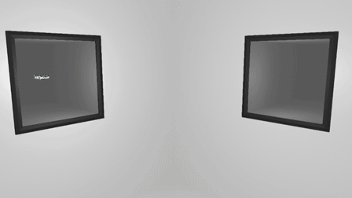
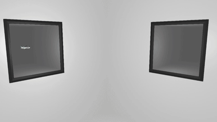
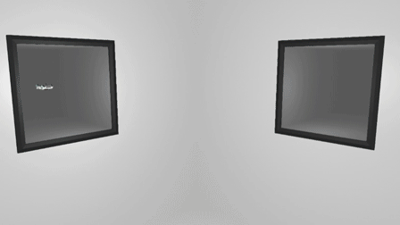
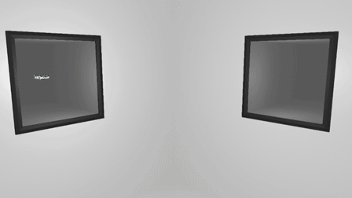
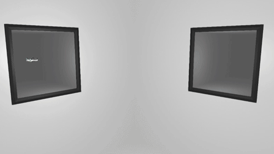
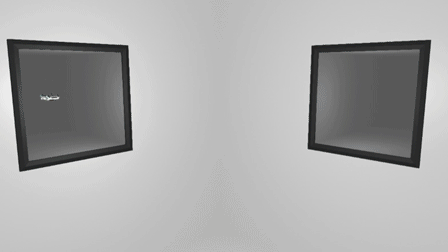

A Guide To Most Distance Mechanics
> Turning In Midair With Gripfly
Turning in the air with wings is simple, but doing it just with gripfly can be a challenge to learn. The basic concepts behind it are relatively simple, but executing it is another thing. However, I hope to at least explain and show the movements behind turning with gripfly.
There are 2 basic motions that are behind all air gripfly turning. Every time you turn in the air with gripfly, it is a combination of these two motions, or a combination of fractions of each of the motions that results in the overall change in direction. I show these two motions in the following gifs.
Basic motion 1:

Basic motion 2:

While these show how to turn 90°, the middle action ('Side Thruster' in basic motion 1, and 'Front Thruster' in basic motion 2) is the only one determining the final direction. The middle action in both rotates 90° in their own directions, and if they rotated any other amount, say 30°, the car will turn an overall 30° by the end of the motion. Of course, when you are actually gripflying, you would do either of these motions far more quickly. This counts double for basic motion 2, because unlike basic motion 1, basic motion 2 has an intermediate part where the car has no way to counter gravity, while in basic motion 1, the boost points downward in the middle of the motion so the car has an opportunity to counter gravity. This means basic motion 2 must be carried out much faster than basic motion 1 if you want to avoid falling too far.
However, you will rarely want to actually do these basic motions in order to turn in the air. While they are a good start if you are first learning to turn in the air, they reach their full potential when they are broken down into smoother movements by only doing a partial amount of their motions multiple times very quickly.
Here is an example:
Here, parts of both basic motion 1 and 2 are present, but it doesn't turn as much with each rotation, meaning that overall, more rotations have to be preformed. When enough rotations like this are done quickly enough, they begin to look and feel smoother. While knowing what parts of which motions to combine comes naturally with time, at least understanding the 2 basic motions that compose the smoother motions can help you develop and a basic framework to work up from.
Lastly, you can even combine thrusters in a twist to act as a step in the turn. A twist is equivalent to preforming parts of basic motion 1 and basic motion 2 simultaneously.
Here is a simple example of how it can be used:

There are 2 basic motions that are behind all air gripfly turning. Every time you turn in the air with gripfly, it is a combination of these two motions, or a combination of fractions of each of the motions that results in the overall change in direction. I show these two motions in the following gifs.
Basic motion 1:

Basic motion 2:

While these show how to turn 90°, the middle action ('Side Thruster' in basic motion 1, and 'Front Thruster' in basic motion 2) is the only one determining the final direction. The middle action in both rotates 90° in their own directions, and if they rotated any other amount, say 30°, the car will turn an overall 30° by the end of the motion. Of course, when you are actually gripflying, you would do either of these motions far more quickly. This counts double for basic motion 2, because unlike basic motion 1, basic motion 2 has an intermediate part where the car has no way to counter gravity, while in basic motion 1, the boost points downward in the middle of the motion so the car has an opportunity to counter gravity. This means basic motion 2 must be carried out much faster than basic motion 1 if you want to avoid falling too far.
However, you will rarely want to actually do these basic motions in order to turn in the air. While they are a good start if you are first learning to turn in the air, they reach their full potential when they are broken down into smoother movements by only doing a partial amount of their motions multiple times very quickly.
Here is an example:
Here, parts of both basic motion 1 and 2 are present, but it doesn't turn as much with each rotation, meaning that overall, more rotations have to be preformed. When enough rotations like this are done quickly enough, they begin to look and feel smoother. While knowing what parts of which motions to combine comes naturally with time, at least understanding the 2 basic motions that compose the smoother motions can help you develop and a basic framework to work up from.
Lastly, you can even combine thrusters in a twist to act as a step in the turn. A twist is equivalent to preforming parts of basic motion 1 and basic motion 2 simultaneously.
Here is a simple example of how it can be used:

<< < 2 > >>
1 2 3 4 5 6 7 8 9 10 11 12
1 2 3 4 5 6 7 8 9 10 11 12
• Tricks • Turning In Midair With Gripfly • Slightly Faster Wing Turning • Differences in Forward Gripfly and Frontward Gripfly • Throttling Boost When Going Up Then Forward • Advantage Of Slow Falling Before Going Up • Wings To Make Higher Jumps • Air Drift • Vertical Gripfly Interaction With Force Zone • Advantage Of Backwards Gripfly • Rotational Alignment Through Rotating In One Direction • Cooldown Through Thruster/Grip Tapping •